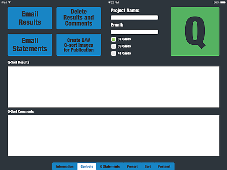
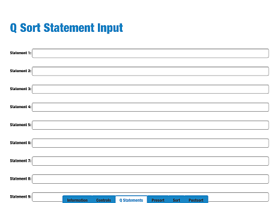
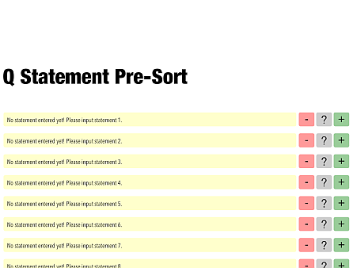
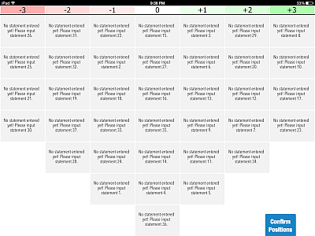
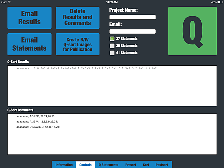

If you use this software for research, a citation is appreciated.
Banasick, Shawn (2015). Ken-Q Mobile (Version 0.7) [Software]. Available from http://www.banasick.net/ken-q/index.html
- Touch-based drag-and-drop sorting of Q-statements with automatic alignment.
- Color coding of Q-statements and Q-sort grid.
- Automatic persistent storage of Q-statements and Q-sort results.
- Formatted e-mail export of Q-statments and Q-sort results for easy import into PQMethod software with minimal editing.
- No internet connection required for the interview process (a connection is only needed to e-mail results after interviews are completed).
- Easy creation of sample black and white images of specific Q-sorts for publication purposes.
- Tap the Controls tab and input the project name and email address.

- Choose the number of statements that will be used in the sort (37, 39, or 41)
- Tap the Statements tab and input the Q-sort statements

- Re-open the Controls tab and tap the green Q button and enter an 8-digit respondent code to begin a Q-sort.
- The respondent completes the Pre-sort evaluations.

- After the Respondent completes the Q-sort, DOUBLE TAP the "Confirm Positions" button to go to the Post-sort page.

- The +3, -3, and 0 Q-sort columns are displayed for the post-sort interview.
- After the Post-sort interview is complete, the Respondent's data is recorded on the Controls page.

- After all of the interviews are complete, the data set and statements can be emailed for analysis using PQMethod.
- You have to load all of the screen views (Presort, Sort, Postsort, etc...) at least once while online before that screen can be used while offline
- The respondent should use the blue locator dot to place the statement card into the desired dropzone location.
- The keyboard doesn't appear automatically to input the Respondent Code. Tap once inside the input box to bring up the keyboard.
- Additional editing may be required (depending on your Email setup) before the exported results data can be used in PQMethod. See the Q methodology Resources webpage for helpful information on how to clean the data.
- Q-statement card positions are not saved during the Q-sort process. If you double-click the home button and jump to another iPad application during the Q-sorting process, the Q-sort statement card positions will be lost.
Copyright © 2015, by Shawn Banasick. All rights reserved.
THIS SOFTWARE IS PROVIDED BY THE COPYRIGHT HOLDERS AND CONTRIBUTORS 'AS IS' AND ANY EXPRESS OR IMPLIED WARRANTIES, INCLUDING, BUT NOT LIMITED TO, THE IMPLIED WARRANTIES OF MERCHANTABILITY AND FITNESS FOR A PARTICULAR PURPOSE ARE DISCLAIMED. IN NO EVENT SHALL THE COPYRIGHT HOLDER OR CONTRIBUTORS BE LIABLE FOR ANY DIRECT, INDIRECT, INCIDENTAL, SPECIAL, EXEMPLARY, OR CONSEQUENTIAL DAMAGES (INCLUDING, BUT NOT LIMITED TO, PROCUREMENT OF SUBSTITUTE GOODS OR SERVICES; LOSS OF USE, DATA, OR PROFITS; OR BUSINESS INTERRUPTION) HOWEVER CAUSED AND ON ANY THEORY OF LIABILITY, WHETHER IN CONTRACT, STRICT LIABILITY, OR TORT (INCLUDING NEGLIGENCE OR OTHERWISE) ARISING IN ANY WAY OUT OF THE USE OF THIS SOFTWARE, EVEN IF ADVISED OF THE POSSIBILITY OF SUCH DAMAGE.